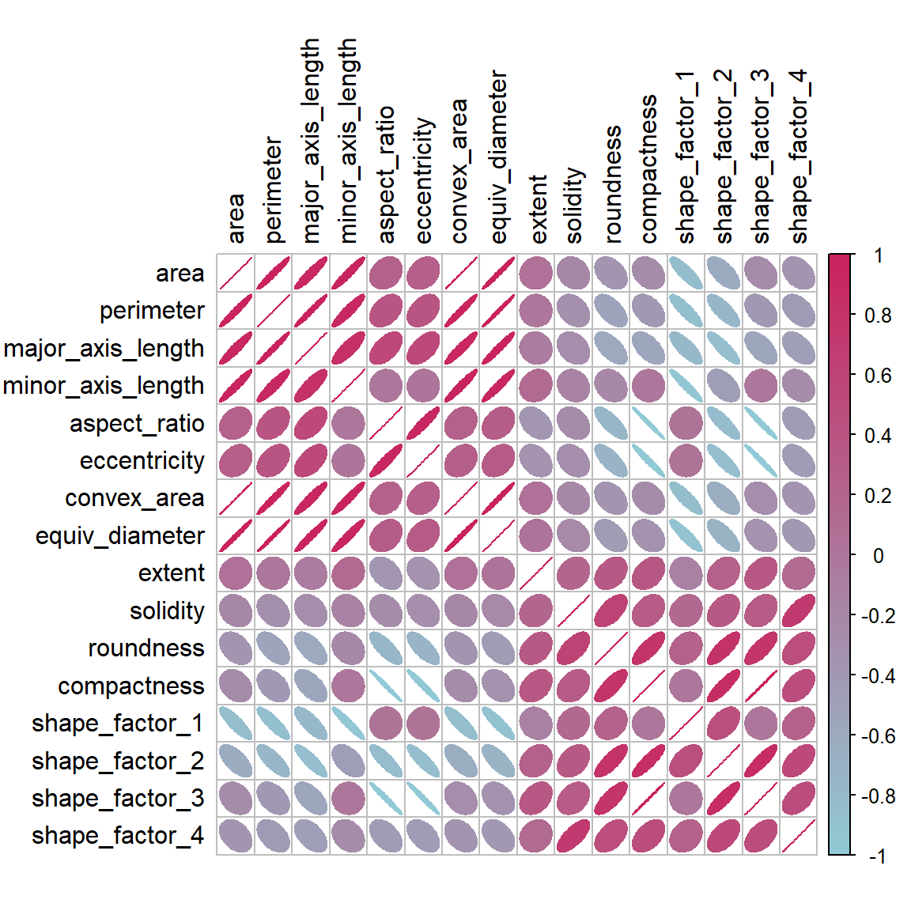
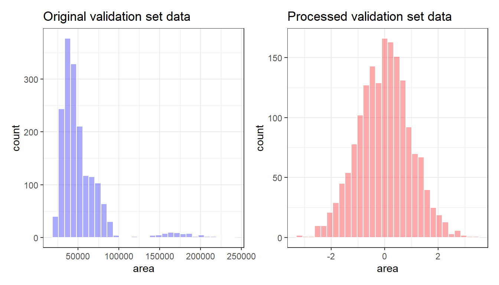
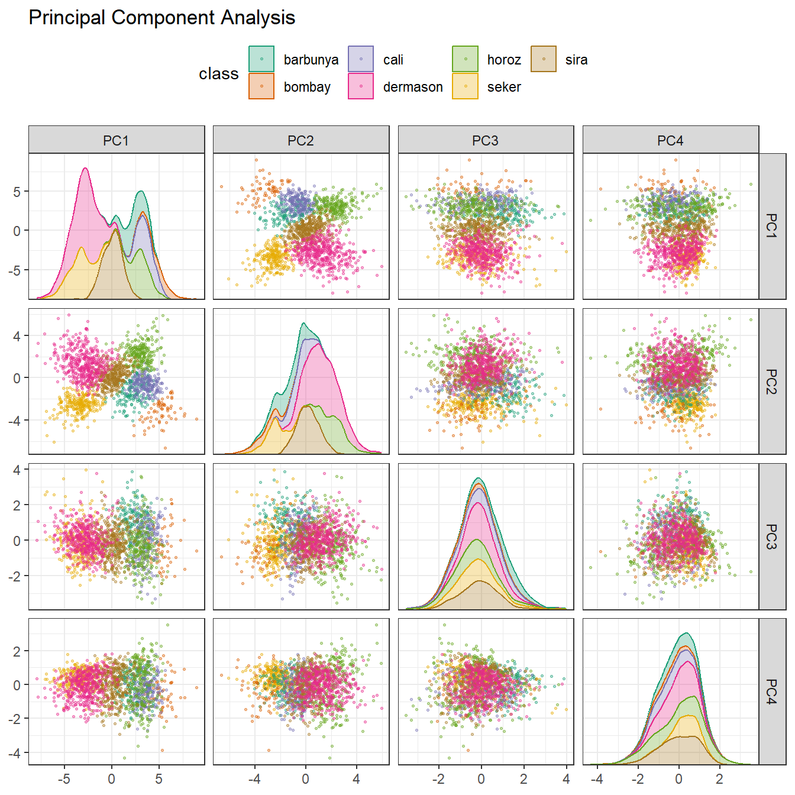
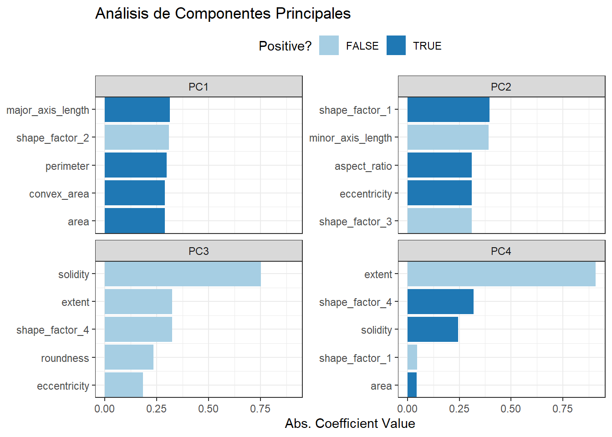
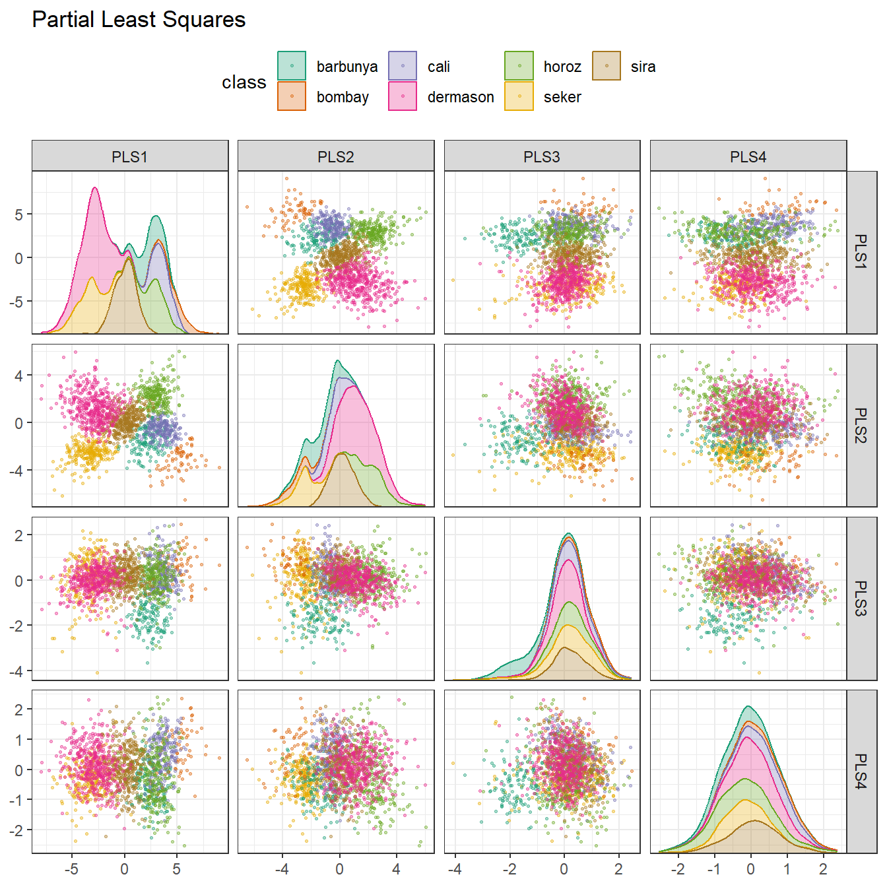
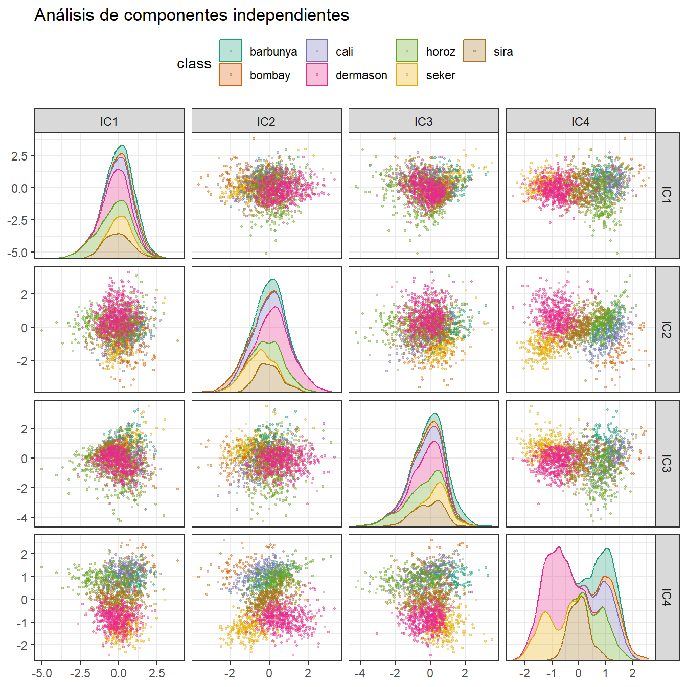
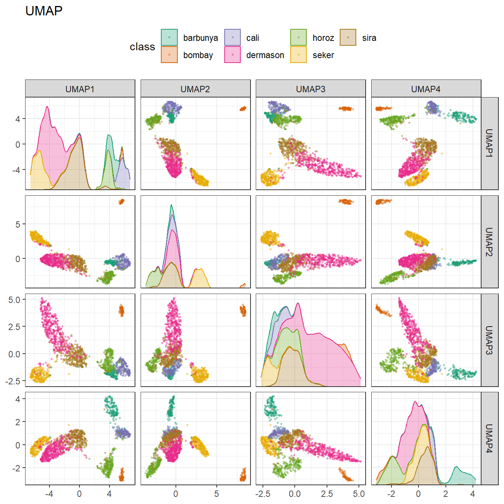
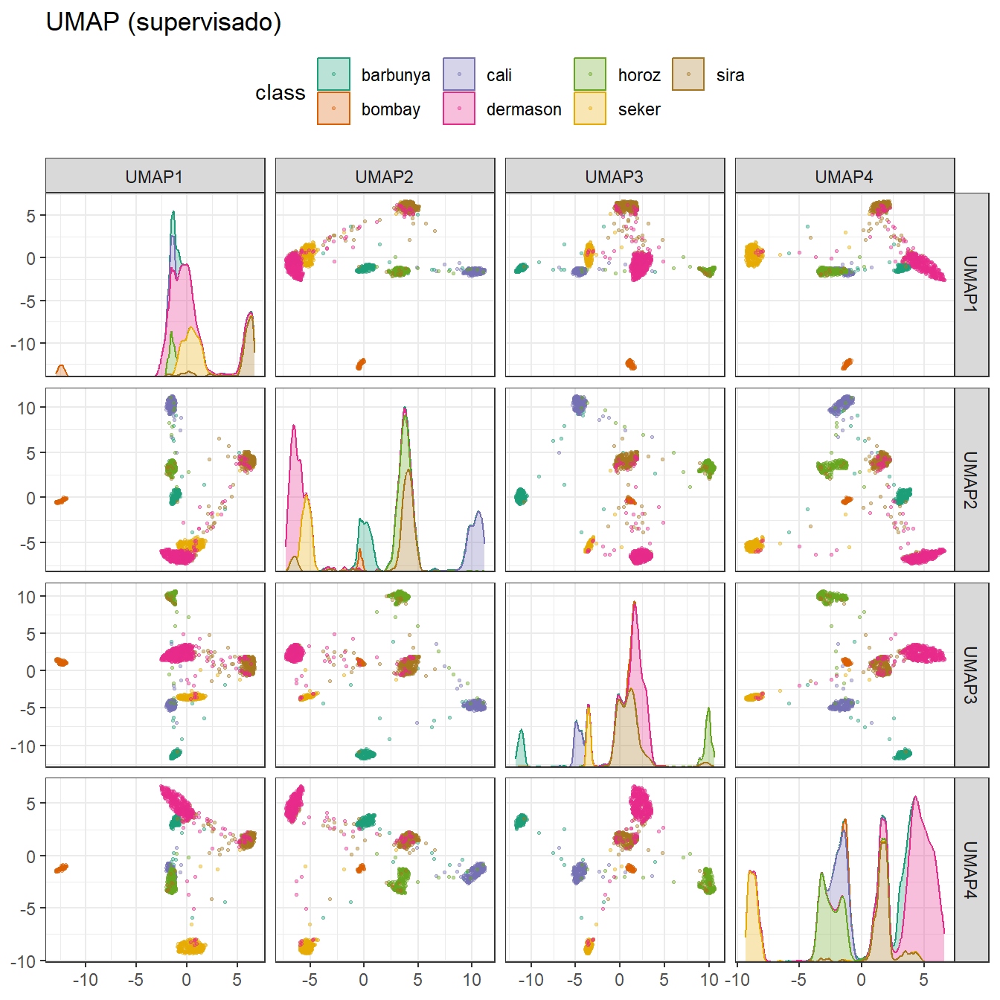
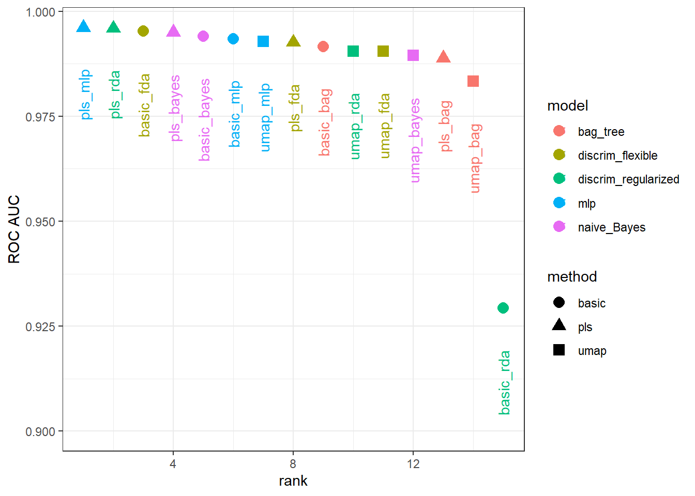

16 Reducción de Dimensionalidad
La reducción de dimensionalidad transforma un conjunto de datos de un espacio de alta dimensión a un espacio de baja dimensión y puede ser una buena opción cuando se sospecha que hay “demasiadas” variables. Un exceso de variables, normalmente predictores, puede ser un problema porque resulta difícil comprender o visualizar datos en dimensiones superiores.
16.1 ¿Qué problemas puede resolver la reducción de dimensionalidad?
La reducción de dimensionalidad se puede utilizar en ingeniería de características o en análisis de datos exploratorios. Por ejemplo, en experimentos de biología de alta dimensión, una de las primeras tareas, antes de cualquier modelado, es determinar si hay tendencias no deseadas en los datos (por ejemplo, efectos no relacionados con la cuestión de interés, como la transferencia de laboratorio a laboratorio). diferencias de laboratorio). Depurar los datos es difícil cuando hay cientos de miles de dimensiones y la reducción de la dimensionalidad puede ser una ayuda para el análisis exploratorio de datos.
Otra posible consecuencia de tener una multitud de predictores es el posible daño a un modelo. El ejemplo más simple es un método como la regresión lineal ordinaria donde la cantidad de predictores debe ser menor que la cantidad de puntos de datos utilizados para ajustar el modelo. Otro problema es la multicolinealidad, donde las correlaciones entre predictores pueden afectar negativamente las operaciones matemáticas utilizadas para estimar un modelo. Si hay un número extremadamente grande de predictores, es bastante improbable que haya un número igual de efectos subyacentes reales. Los predictores pueden estar midiendo los mismos efectos latentes y, por lo tanto, dichos predictores estarán altamente correlacionados. Muchas técnicas de reducción de dimensionalidad prosperan en esta situación. De hecho, la mayoría puede ser eficaz sólo cuando existen relaciones entre predictores que puedan explotarse.
Al iniciar un nuevo proyecto de modelado, reducir las dimensiones de los datos puede proporcionar cierta intuición sobre cuán difícil puede ser el problema de modelado.
El análisis de componentes principales (PCA) es uno de los métodos más sencillos para reducir el número de columnas en el conjunto de datos porque se basa en métodos lineales y no está supervisado (es decir, no considera los datos de resultados). Para un problema de clasificación de alta dimensión, un gráfico inicial de los componentes principales del PCA podría mostrar una separación clara entre las clases. Si este es el caso, entonces es bastante seguro asumir que un clasificador lineal podría hacer un buen trabajo. Sin embargo, lo contrario no es cierto; la falta de separación no significa que el problema sea insuperable.
Los métodos de reducción de dimensionalidad discutidos en este capítulo generalmente no son métodos de selección de características. Los métodos como PCA representan los predictores originales utilizando un subconjunto más pequeño de características nuevas. Se requieren todos los predictores originales para calcular estas nuevas características. La excepción a esto son los métodos escasos que tienen la capacidad de eliminar por completo el impacto de los predictores al crear nuevas funciones.
Este capítulo tiene dos objetivos:
Demuestre cómo utilizar recetas para crear un pequeño conjunto de funciones que capturen los aspectos principales del conjunto de predictores original.
Describir cómo se pueden usar las recetas por sí solas (en lugar de usarse en un objeto de flujo de trabajo, como en sec-using-recipes).
Esto último resulta útil a la hora de probar o depurar una receta. Sin embargo, como se describe en sec-using-recipes, la mejor manera de utilizar una receta para modelar es desde un objeto de flujo de trabajo.
Además del paquete tidymodels, este capítulo utiliza los siguientes paquetes: baguette, beans, bestNormalize, corrplot, discrim, embed, ggforce, klaR, learntidymodels,1 mixOmics,2 y uwot.
16.2 Una imagen vale más que mil… Frijoles
Veamos cómo usar la reducción de dimensionalidad con recipes para ver un conjunto de datos de ejemplo. Koklu y Ozkan (2020) publicó un conjunto de datos de características visuales de los frijoles secos y describió métodos para determinar las variedades de frijoles secos en una imagen. Si bien la dimensionalidad de estos datos no es muy grande en comparación con muchos problemas de modelado del mundo real, proporciona un buen ejemplo práctico para demostrar cómo reducir la cantidad de funciones. De su manuscrito:
El objetivo principal de este estudio es proporcionar un método para la obtención de variedades de semillas uniformes a partir de la producción de cultivos, la cual es en forma de población, por lo que las semillas no están certificadas como una única variedad. Así, se desarrolló un sistema de visión por computadora para distinguir siete variedades diferentes registradas de frijol seco con características similares con el fin de obtener una clasificación uniforme de las semillas. Para el modelo de clasificación se tomaron imágenes de 13.611 granos de 7 diferentes frijoles secos registrados con una cámara de alta resolución.
Cada imagen contiene varios beans. El proceso de determinar qué píxeles corresponden a un frijol en particular se llama segmentación de imágenes. Estos píxeles se pueden analizar para producir características para cada frijol, como el color y la morfología (es decir, la forma). Estas características se utilizan luego para modelar el resultado (variedad de frijol) porque las diferentes variedades de frijol se ven diferentes. Los datos de entrenamiento provienen de un conjunto de imágenes etiquetadas manualmente, y este conjunto de datos se utiliza para crear un modelo predictivo que puede distinguir entre siete variedades de frijol: Cali, Horoz, Dermason, Seker, Bombay, Barbunya y Sira. Producir un modelo eficaz puede ayudar a los fabricantes a cuantificar la homogeneidad de un lote de granos.
Existen numerosos métodos para cuantificar las formas de los objetos (Mingqiang, Kidiyo, y Joseph 2008). Muchos están relacionados con los límites o regiones del objeto de interés. Ejemplos de características incluyen:
El área (o tamaño) se puede estimar utilizando el número de píxeles del objeto o el tamaño del casco convexo alrededor del objeto.
Podemos medir el perímetro usando el número de píxeles en el límite así como el área del cuadro delimitador (el rectángulo más pequeño que encierra un objeto).
El eje mayor cuantifica la línea más larga que conecta las partes más extremas del objeto. El eje menor es perpendicular al eje mayor.
Podemos medir la compacidad de un objeto usando la relación entre el área del objeto y el área de un círculo con el mismo perímetro. Por ejemplo, los símbolos “•” y “×” tienen compacidades muy diferentes.
También existen diferentes medidas de qué tan alargado u oblongo es un objeto. Por ejemplo, la estadística de excentricidad es la relación entre los ejes mayor y menor. También existen estimaciones relacionadas para la redondez y la convexidad.
Observe la excentricidad de las diferentes formas en Figura fig-eccentricity.
Las formas como círculos y cuadrados tienen una excentricidad baja, mientras que las formas oblongas tienen valores altos. Además, la métrica no se ve afectada por la rotación del objeto.
Muchas de estas características de la imagen tienen altas correlaciones; es más probable que los objetos con áreas grandes tengan perímetros grandes. A menudo existen varios métodos para cuantificar las mismas características subyacentes (por ejemplo, tamaño).
En los datos de los frijoles, se calcularon las características morfológicas de 16: area, perimeter, major axis length, minor axis length, aspect ratio, eccentricity, convex area, equiv diameter, extent, solidity, roundness, compactness, shape factor 1, shape factor 2, shape factor 3, and shape factor 4. Los últimos cuatro se describen en Symons y Fulcher (1988).
Podemos comenzar cargando los datos:
library(tidymodels)
tidymodels_prefer()
library(beans)Es importante mantener una buena disciplina de datos al evaluar técnicas de reducción de dimensionalidad, especialmente si las utilizará dentro de un modelo.
Para nuestros análisis, comenzamos reteniendo un conjunto de pruebas con initial_split(). Los datos restantes se dividen en conjuntos de entrenamiento y validación:
set.seed(1601)
bean_split <- initial_validation_split(beans, strata = class, prop = c(0.75, 0.125))
## Warning: Too little data to stratify.
## • Resampling will be unstratified.
bean_split
## <Training/Validation/Testing/Total>
## <10206/1702/1703/13611>
# Devolver marcos de datos:
bean_train <- training(bean_split)
bean_test <- testing(bean_split)
bean_validation <- validation(bean_split)
set.seed(1602)
# Devuelve un objeto 'rset' para usarlo con las funciones de sintonización:
bean_val <- validation_set(bean_split)
bean_val$splits[[1]]
## <Training/Validation/Total>
## <10206/1702/11908>Para evaluar visualmente qué tan bien funcionan los diferentes métodos, podemos estimar los métodos en el conjunto de entrenamiento (n = 10,206 beans) y mostrar los resultados usando el conjunto de validación ( n = formato r(nrow(bean_validation), big.mark = ",")).
Antes de comenzar cualquier reducción de dimensionalidad, podemos dedicar algún tiempo a investigar nuestros datos. Como sabemos que muchas de estas características de forma probablemente miden conceptos similares, echemos un vistazo a la estructura de correlación de los datos en Figura fig-beans-corr-plot usando este código.

Muchos de estos predictores están altamente correlacionados, como el área y el perímetro o los factores de forma 2 y 3. Si bien no nos tomamos el tiempo para hacerlo aquí, también es importante ver si esta estructura de correlación cambia significativamente entre las categorías de resultados. Esto puede ayudar a crear mejores modelos.
16.3 Una Receta Inicial
Es hora de mirar los datos de los beans en un espacio más pequeño. Podemos comenzar con una receta básica para preprocesar los datos antes de cualquier paso de reducción de dimensionalidad. Varios predictores son razones y, por lo tanto, es probable que tengan distribuciones sesgadas. Estas distribuciones pueden causar estragos en los cálculos de varianza (como los que se utilizan en PCA). El paquete bestNormalize tiene un paso que puede imponer una distribución simétrica para los predictores. Usaremos esto para mitigar el problema de las distribuciones sesgadas:
library(bestNormalize)
bean_rec <-
# Utilice los datos de entrenamiento del objeto dividido bean_val
recipe(class ~ ., data = bean_train) %>%
step_zv(all_numeric_predictors()) %>%
step_orderNorm(all_numeric_predictors()) %>%
step_normalize(all_numeric_predictors())Recuerde que al invocar la función recipe() los pasos no se estiman ni ejecutan de ninguna manera.
Esta receta se ampliará con pasos adicionales para los análisis de reducción de dimensionalidad. Antes de hacerlo, repasemos cómo se puede utilizar una receta fuera de un flujo de trabajo.
16.4 Recetas en la naturaleza
Como se menciona en sec-using-recipes, un flujo de trabajo que contiene una receta usa fit() para estimar la receta y el modelo, luego predict() para procesar los datos y hacer predicciones del modelo. Hay funciones análogas en el paquete recipes que se pueden usar para el mismo propósito:
-
prep(recipe, training)ajusta la receta al conjunto de entrenamiento. -
bake(recipe, new_data)aplica las operaciones de la receta anew_data.
Figura fig-recipe-process resume esto. Veamos cada una de estas funciones con más detalle.

16.4.1 Preparando una receta
Estimemos bean_rec usando los datos del conjunto de entrenamiento, con prep(bean_rec):
bean_rec_trained <- prep(bean_rec)
bean_rec_trained
##
## ── Recipe ───────────────────────────────────────────────────────────────────────────
##
## ── Inputs
## Number of variables by role
## outcome: 1
## predictor: 16
##
## ── Training information
## Training data contained 10206 data points and no incomplete rows.
##
## ── Operations
## • Zero variance filter removed: <none> | Trained
## • orderNorm transformation on: area, perimeter, major_axis_length, ... | Trained
## • Centering and scaling for: area, perimeter, major_axis_length, ... | TrainedTenga en cuenta en el resultado que los pasos han sido entrenados y que los selectores ya no son generales (es decir, all_numeric_predictors()); ahora muestran las columnas reales que se seleccionaron. Además, prep(bean_rec) no requiere el argumento training. Puede pasar cualquier dato a ese argumento, pero omitirlo significa que se utilizarán los “datos”, data, originales de la llamada a recipe(). En nuestro caso, estos fueron los datos del conjunto de entrenamiento.
Un argumento importante para prep() es retain. Cuando retain = TRUE (el valor predeterminado), la versión estimada del conjunto de entrenamiento se mantiene dentro de la receta. Este conjunto de datos ha sido preprocesado siguiendo todos los pasos enumerados en la receta. Dado que prep() tiene que ejecutar la receta a medida que avanza, puede ser ventajoso mantener esta versión del conjunto de entrenamiento para que, si ese conjunto de datos se va a utilizar más adelante, se puedan evitar cálculos redundantes. Sin embargo, si el conjunto de entrenamiento es grande, puede resultar problemático mantener una cantidad tan grande de datos en la memoria. Utilice retain = FALSE para evitar esto.
Una vez que se agregan nuevos pasos a esta receta estimada, volver a aplicar prep() estimará solo los pasos no entrenados. Esto será útil cuando probemos diferentes métodos de extracción de características.
Si encuentra errores al trabajar con una receta, puede usar prep() con su opción verbose para solucionar problemas:
bean_rec_trained %>%
step_dummy(cornbread) %>% # <- no es un predictor real
prep(verbose = TRUE)
## oper 1 step zv [pre-trained]
## oper 2 step orderNorm [pre-trained]
## oper 3 step normalize [pre-trained]
## oper 4 step dummy [training]
## Error in `step_dummy()`:
## Caused by error in `prep()`:
## ! Can't subset columns that don't exist.
## ✖ Column `cornbread` doesn't exist.Otra opción que puede ayudarte a entender lo que sucede en el análisis es log_changes:
show_variables <-
bean_rec %>%
prep(log_changes = TRUE)
## step_zv (zv_RLYwH): same number of columns
##
## step_orderNorm (orderNorm_Jx8oD): same number of columns
##
## step_normalize (normalize_GU75D): same number of columns16.4.2 Hornear la receta
Usar bake() con una receta es muy parecido a usar predict() con un modelo; las operaciones estimadas a partir del conjunto de entrenamiento se aplican a cualquier dato, como datos de prueba o datos nuevos en el momento de la predicción.
Por ejemplo, las muestras del conjunto de validación se pueden procesar:
bean_val_processed <- bake(bean_rec_trained, new_data = bean_validation)Figura fig-bean-area muestra histogramas del predictor de area antes y después de que se preparara la receta.
library(patchwork)
p1 <-
bean_validation %>%
ggplot(aes(x = area)) +
geom_histogram(bins = 30, color = "white", fill = "blue", alpha = 1/3) +
ggtitle("Datos del conjunto de validación original")
p2 <-
bean_val_processed %>%
ggplot(aes(x = area)) +
geom_histogram(bins = 30, color = "white", fill = "red", alpha = 1/3) +
ggtitle("Datos del conjunto de validación procesados")
p1 + p2
area antes y después del preprocesamientoAquí vale la pena señalar dos aspectos importantes de bake().
Primero, como se mencionó anteriormente, el uso de prep(recipe, retener = TRUE) mantiene la versión procesada existente del conjunto de entrenamiento en la receta. Esto permite al usuario utilizar bake(recipe, new_data = NULL), que devuelve ese conjunto de datos sin más cálculos. Por ejemplo:
Si el conjunto de entrenamiento no es patológicamente grande, usar este valor de retain puede ahorrar mucho tiempo de cálculo.
En segundo lugar, se pueden utilizar selectores adicionales en la llamada para especificar qué columnas devolver. El selector predeterminado es everything(), pero se pueden usar directivas más específicas.
Usaremos prep() y bake() en la siguiente sección para ilustrar algunas de estas opciones.
16.5 Técnicas de extracción de características
Dado que las recetas son la opción principal en tidymodels para la reducción de dimensionalidad, escribamos una función que estime la transformación y represente los datos resultantes en una matriz de diagrama de dispersión a través del paquete ggforce:
library(ggforce)
plot_validation_results <- function(recipe, dat = bean_validation) {
recipe %>%
# Calcule los pasos adicionales
prep() %>%
# Procesar los datos (la validación establecida por defecto)
bake(new_data = dat) %>%
# Crear la matriz del diagrama de dispersión
ggplot(aes(x = .panel_x, y = .panel_y, color = class, fill = class)) +
geom_point(alpha = 0.4, size = 0.5) +
geom_autodensity(alpha = .3) +
facet_matrix(vars(-class), layer.diag = 2) +
scale_color_brewer(palette = "Dark2") +
scale_fill_brewer(palette = "Dark2")
}Reutilizaremos esta función varias veces en este capítulo.
Aquí se exploran una serie de varias metodologías de extracción de características. Se puede encontrar una descripción general de la mayoría en la Sección 6.3.1 de Kuhn y Johnson (2020) y las referencias allí contenidas. . El método UMAP se describe en McInnes, Healy, y Melville (2020).
16.5.1 Análisis de componentes principales
Ya hemos mencionado la PCA varias veces en este libro y es hora de entrar en más detalles. PCA es un método no supervisado que utiliza combinaciones lineales de predictores para definir nuevas características. Estas características intentan dar cuenta de la mayor variación posible en los datos originales. Agregamos step_pca() a la receta original y usamos nuestra función para visualizar los resultados en el conjunto de validación en Figura fig-bean-pca usando:
bean_rec_trained %>%
step_pca(all_numeric_predictors(), num_comp = 4) %>%
plot_validation_results() +
ggtitle("Análisis de componentes principales")
Vemos que los dos primeros componentes PC1 y PC2, especialmente cuando se usan juntos, hacen un trabajo eficaz al distinguir o separar las clases. Esto puede llevarnos a esperar que el problema general de clasificar estos granos no sea especialmente difícil.
Recuerde que PCA no está supervisada. Para estos datos, resulta que los componentes del PCA que explican la mayor variación en los predictores también predicen las clases. ¿Qué características son el rendimiento de conducción? El paquete learntidymodels tiene funciones que pueden ayudar a visualizar las características principales de cada componente. Necesitaremos la receta preparada; el paso PCA se agrega en el siguiente código junto con una llamada a prep():
library(learntidymodels)
bean_rec_trained %>%
step_pca(all_numeric_predictors(), num_comp = 4) %>%
prep() %>%
plot_top_loadings(component_number <= 4, n = 5) +
scale_fill_brewer(palette = "Paired") +
ggtitle("Análisis de Componentes Principales")Esto produce Figura fig-pca-loadings.

Las cargas superiores están relacionadas principalmente con el grupo de predictores correlacionados que se muestran en la parte superior izquierda del gráfico de correlación anterior: perímetro, área, longitud del eje principal y área convexa. Todos estos están relacionados con el tamaño del frijol. El factor de forma 2, de Symons y Fulcher (1988), es el área sobre el cubo de la longitud del eje mayor y, por lo tanto, también está relacionado con el tamaño del frijol. Las medidas de alargamiento parecen dominar el segundo componente de PCA.
16.5.2 Mínimos cuadrados parciales
PLS, que presentamos en sec-submodel-trick, es una versión supervisada de PCA. Intenta encontrar componentes que maximicen simultáneamente la variación en los predictores y al mismo tiempo maximicen la relación entre esos componentes y el resultado. Figura fig-bean-pls muestra los resultados de esta versión ligeramente modificada del código PCA:
bean_rec_trained %>%
step_pls(all_numeric_predictors(), outcome = "class", num_comp = 4) %>%
plot_validation_results() +
ggtitle("Mínimos cuadrados parciales")
¡Los dos primeros componentes PLS trazados en Figura fig-bean-pls son casi idénticos a los dos primeros componentes PCA! Encontramos este resultado porque esos componentes de PCA son muy efectivos para separar las variedades de frijoles. Los componentes restantes son diferentes. Figura fig-pls-loadings visualiza las cargas, las características principales de cada componente.
bean_rec_trained %>%
step_pls(all_numeric_predictors(), outcome = "class", num_comp = 4) %>%
prep() %>%
plot_top_loadings(component_number <= 4, n = 5, type = "pls") +
scale_fill_brewer(palette = "Paired") +
ggtitle("Mínimos cuadrados parciales")
La solidez (es decir, la densidad del grano) impulsa el tercer componente del PLS, junto con la redondez. La solidez puede estar capturando características del frijol relacionadas con las “baches” de la superficie del frijol, ya que puede medir la irregularidad de los límites del frijol.
16.5.3 Análisis de componentes independientes
ICA (Análisis de componentes independientes) es ligeramente diferente a PCA en que encuentra componentes que son lo más independientes estadísticamente posible entre sí (en lugar de no estar correlacionados). Se puede considerar que maximiza la “no gaussianidad” de los componentes de ICA, o separa información en lugar de comprimir información como PCA. Usemos step_ica() para producir Figura fig-bean-ica:
bean_rec_trained %>%
step_ica(all_numeric_predictors(), num_comp = 4) %>%
plot_validation_results() +
ggtitle("Análisis de componentes independientes")
Al inspeccionar este gráfico, no parece haber mucha separación entre las clases en los primeros componentes cuando se usa ICA. Estos componentes independientes (o lo más independientes posible) no separan los tipos de frijoles.
16.5.4 Aproximación y proyección de variedades uniformes.
UMAP es similar al popular método t-SNE para la reducción de dimensiones no lineales. En el espacio original de alta dimensión, UMAP utiliza un método de vecino más cercano basado en la distancia para encontrar áreas locales de los datos donde es más probable que los puntos de datos estén relacionados. La relación entre puntos de datos se guarda como un modelo de gráfico dirigido donde la mayoría de los puntos no están conectados.
A partir de ahí, UMAP traduce los puntos del gráfico al espacio dimensional reducido. Para hacer esto, el algoritmo tiene un proceso de optimización que utiliza entropía cruzada para asignar puntos de datos al conjunto más pequeño de características para que el gráfico sea bien aproximado.
Para crear el mapeo, el paquete embed contiene una función de paso para este método, visualizada en Figura fig-bean-umap.

Si bien el espacio entre grupos es pronunciado, los grupos pueden contener una mezcla heterogénea de clases.
También existe una versión supervisada de UMAP:
bean_rec_trained %>%
step_umap(all_numeric_predictors(), outcome = "class", num_comp = 4) %>%
plot_validation_results() +
ggtitle("UMAP (supervisado)")
El método supervisado que se muestra en Figura fig-bean-umap-supervised parece prometedor para modelar los datos.
UMAP es un método poderoso para reducir el espacio de funciones. Sin embargo, puede ser muy sensible a los parámetros de ajuste (por ejemplo, el número de vecinos, etc.). Por esta razón, sería útil experimentar con algunos de los parámetros para evaluar qué tan sólidos son los resultados de estos datos.
16.6 Modelado
Vale la pena investigar tanto el método PLS como el UMAP junto con diferentes modelos. Exploremos una variedad de modelos diferentes con estas técnicas de reducción de dimensionalidad (sin ninguna transformación): una red neuronal de una sola capa, árboles en bolsas, análisis discriminante flexible (FDA), Bayes ingenuo y análisis discriminante regularizado (RDA).
Ahora que volvemos al “modo de modelado”, crearemos una serie de especificaciones de modelo y luego usaremos un conjunto de flujo de trabajo para ajustar los modelos en el siguiente código. Tenga en cuenta que los parámetros del modelo se ajustan junto con los parámetros de la receta (por ejemplo, tamaño de la dimensión reducida, parámetros UMAP).
library(baguette)
library(discrim)
mlp_spec <-
mlp(hidden_units = tune(), penalty = tune(), epochs = tune()) %>%
set_engine('nnet') %>%
set_mode('classification')
bagging_spec <-
bag_tree() %>%
set_engine('rpart') %>%
set_mode('classification')
fda_spec <-
discrim_flexible(
prod_degree = tune()
) %>%
set_engine('earth')
rda_spec <-
discrim_regularized(frac_common_cov = tune(), frac_identity = tune()) %>%
set_engine('klaR')
bayes_spec <-
naive_Bayes() %>%
set_engine('klaR')También necesitamos recetas para los métodos de reducción de dimensionalidad que probaremos. Comencemos con una receta base bean_rec y luego ampliémosla con diferentes pasos de reducción de dimensionalidad:
bean_rec <-
recipe(class ~ ., data = bean_train) %>%
step_zv(all_numeric_predictors()) %>%
step_orderNorm(all_numeric_predictors()) %>%
step_normalize(all_numeric_predictors())
pls_rec <-
bean_rec %>%
step_pls(all_numeric_predictors(), outcome = "class", num_comp = tune())
umap_rec <-
bean_rec %>%
step_umap(
all_numeric_predictors(),
outcome = "class",
num_comp = tune(),
neighbors = tune(),
min_dist = tune()
)Una vez más, el paquete workflowsets toma los preprocesadores y modelos y los cruza. La opción control parallel_over está configurada para que el procesamiento paralelo pueda funcionar simultáneamente en todas las combinaciones de parámetros de ajuste. La función workflow_map() aplica la búsqueda de cuadrícula para optimizar los parámetros del modelo/preprocesamiento (si los hay) en 10 combinaciones de parámetros. El área multiclase bajo la curva ROC se estima en el conjunto de validación.
ctrl <- control_grid(parallel_over = "everything")
bean_res <-
workflow_set(
preproc = list(basic = class ~., pls = pls_rec, umap = umap_rec),
models = list(bayes = bayes_spec, fda = fda_spec,
rda = rda_spec, bag = bagging_spec,
mlp = mlp_spec)
) %>%
workflow_map(
verbose = TRUE,
seed = 1603,
resamples = bean_val,
grid = 10,
metrics = metric_set(roc_auc),
control = ctrl
)Podemos clasificar los modelos según sus estimaciones del conjunto de validación del área bajo la curva ROC:
rankings <-
rank_results(bean_res, select_best = TRUE) %>%
mutate(method = map_chr(wflow_id, ~ str_split(.x, "_", simplify = TRUE)[1]))
tidymodels_prefer()
filter(rankings, rank <= 5) %>% dplyr::select(rank, mean, model, method)
## # A tibble: 5 × 4
## rank mean model method
## <int> <dbl> <chr> <chr>
## 1 1 0.996 mlp pls
## 2 2 0.996 discrim_regularized pls
## 3 3 0.995 discrim_flexible basic
## 4 4 0.995 naive_Bayes pls
## 5 5 0.994 naive_Bayes basicFigura fig-dimensionality-rankings ilustra esta clasificación.

De estos resultados se desprende claramente que la mayoría de los modelos ofrecen muy buen rendimiento; hay pocas malas decisiones aquí. Para la demostración, usaremos el modelo RDA con características PLS como modelo final. Finalizaremos el flujo de trabajo con los mejores parámetros numéricamente, lo ajustaremos al conjunto de entrenamiento y luego lo evaluaremos con el conjunto de prueba:
¿Cuáles son los resultados de nuestra métrica (ROC AUC multiclase) en el conjunto de pruebas?
collect_metrics(rda_res)
## # A tibble: 1 × 4
## .metric .estimator .estimate .config
## <chr> <chr> <dbl> <chr>
## 1 roc_auc hand_till 0.995 Preprocessor1_Model1¡Bastante bien! Usaremos este modelo en el próximo capítulo para demostrar métodos de importancia variable.
16.7 Resumen del capítulo
La reducción de dimensionalidad puede ser un método útil para el análisis exploratorio de datos y el modelado. Los paquetes recipes y embed contienen pasos para una variedad de métodos diferentes y workflowsets facilita la elección de un método apropiado para un conjunto de datos. Este capítulo también analizó cómo se pueden usar recetas por sí solas, ya sea para depurar problemas con una receta o directamente para análisis exploratorio de datos y visualización de datos.
Koklu, M, y IA Ozkan. 2020. «Multiclass classification of dry beans using computer vision and machine learning techniques». Computers and Electronics in Agriculture 174: 105507.
Kuhn, M, y K Johnson. 2020. Feature engineering and selection: A practical approach for predictive models. CRC Press.
McInnes, L, J Healy, y J Melville. 2020. «UMAP: Uniform manifold approximation and projection for dimension reduction».
Mingqiang, Y, K Kidiyo, y R Joseph. 2008. «A survey of shape feature extraction techniques». En Pattern Recognition, editado por PY Yin. Rijeka: IntechOpen. https://doi.org/10.5772/6237.
Symons, S, y RG Fulcher. 1988. «Determination of wheat kernel morphological variation by digital image analysis: I. Variation in Eastern Canadian milling quality wheats». Journal of Cereal Science 8 (3): 211-18.
El paquete learntidymodels se puede encontrar en su sitio de GitHub: https://github.com/tidymodels/learntidymodels↩︎
El paquete mixOmics no está disponible en CRAN, sino en Bioconductor: https://doi.org/doi:10.18129/B9.bioc.mixOmics↩︎